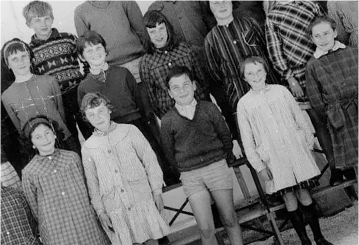
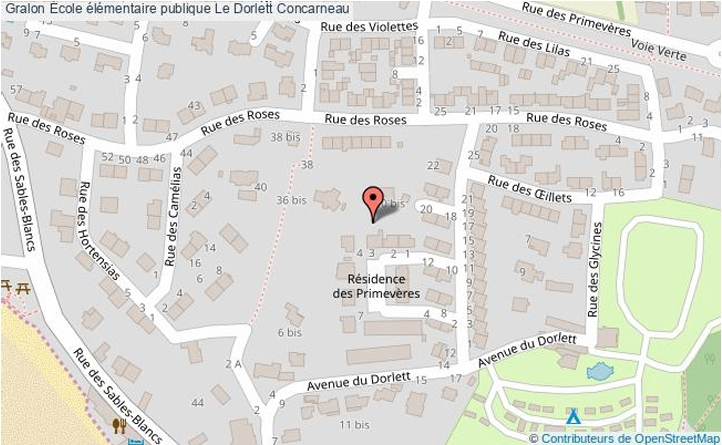

RAPPORT DE STAGE
Animation périscolaire
École primaire publique Le Dorlett – Concarneau
SOMMAIRE

1. Introduction
Dans le cadre de ma classe de troisième, j'ai effectué mon stage d'observation au sein de l'École primaire publique Le Dorlett, dans le service périscolaire, en animation.
J'ai choisi ce stage car je souhaite devenir animateur plus tard. Travailler avec des enfants m'intéresse particulièrement, car j'aime transmettre, jouer, partager et aider les plus jeunes à apprendre en s'amusant.
Je me suis orienté vers cette école car elle accueille des enfants de différents âges, ce qui me permettait de découvrir plusieurs façons d'encadrer et d'animer un groupe. De plus, le contact avec les enfants est quelque chose qui me motive énormément.
Ce stage m'a confirmé que le métier d'animateur correspond à ma personnalité : dynamique, à l'écoute et créatif.

2. Présentation de la structure
L'École primaire publique Le Dorlett est située à Concarneau, dans le Finistère, en Bretagne. Elle accueille des élèves de la maternelle jusqu'au primaire.
En plus du temps scolaire, l'établissement propose un accueil périscolaire :
- le midi (cantine),
- après l'école,
- et le mercredi avec le centre aéré.
Le rôle du service périscolaire est d'encadrer les enfants en dehors des heures de classe, dans un cadre sécurisé et bienveillant. Les animateurs assurent la surveillance, organisent des activités et veillent au bien-être des enfants.
L'équipe est composée d'animateurs et d'une directrice, Mme Muriel, qui coordonne l'organisation.
3. Les activités proposées
Activités manuelles
- Dessin
- Coloriage
- Bricolage
- Fabrication d'objets
Activités collectives
- Jeux en extérieur
- Jeux de coopération
- Activités sportives
Temps calmes
- Lecture
- Jeux de société
Sorties (centre aéré)
- Cinéma
- Piscine
- Autres sorties selon les groupes
L'objectif est de permettre aux enfants de se détendre après l'école tout en développant leur créativité et leur esprit d'équipe.

4. Le métier d'animateur
Le métier d'animateur consiste à encadrer des enfants dans des activités éducatives et de loisirs.
Ses missions principales :
- Assurer la sécurité des enfants
- Organiser des activités adaptées
- Maintenir un bon climat de groupe
- Être à l'écoute
- Travailler en équipe
Ce métier demande :
- De la patience
- De l'énergie
- De la créativité
- Du sens des responsabilités
Pour exercer ce métier, il est possible de passer le BAFA. D'autres diplômes professionnels existent également si l'on souhaite en faire son métier principal.

5. Une journée type
Lundi et Mardi
Ma journée commençait à 11h.
Je me rendais à la cantine pour aider au service. J'aidais les enfants à s'installer et je participais à la distribution des repas. J'alternais avec ma collègue : parfois je m'occupais des plus petits, parfois des plus grands.
Après le repas, nous allions en salle de garderie ou dans la cour.
Nous organisions :
- des jeux collectifs,
- des activités manuelles,
- des moments d'échange avec les enfants.
Je participais activement aux jeux et j'aidais lorsque des conflits apparaissaient.
Mercredi (centre aéré)
Le mercredi, je commençais à 9h30.
J'étais avec un groupe d'enfants âgés de 6 à 7 ans.
Nous avons fait une sortie au cinéma. D'autres groupes allaient à la piscine ou devaient aller au bowling.
Cette journée m'a permis de découvrir l'organisation nécessaire pour une sortie extérieure : sécurité, gestion du groupe, respect des horaires.

6. Bilan personnel et conclusion
J'ai appris :
- à m'adapter aux enfants selon leur âge,
- à être plus patient,
- à observer le fonctionnement d'une équipe d'animation.
Les animateurs étaient très gentils et disponibles. La directrice, Mme Muriel, m'a bien accueilli et m'a expliqué les responsabilités du métier.
Les enfants ont été très agréables avec moi, et j'ai apprécié le lien que j'ai pu créer avec eux.
Ce stage a confirmé mon envie de travailler plus tard dans l'animation. C'est un métier parfois fatigant, mais humainement très enrichissant.
Je remercie toute l'équipe du Dorlett pour leur accueil et leur confiance.